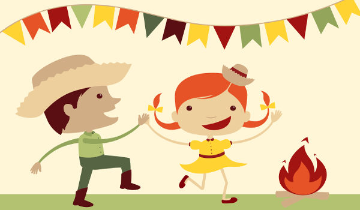

Quando surgiu a festa junina
O começo da festa junina ao Brasil remonta ao século XVI.
As festas juninas eram tradições bastante populares na Península Ibérica (Portugal e Espanha) e
, por isso, foram trazidas para cá pelos portugueses durante a colonização, assim como muitas
outras tradições.
Quando introduzida no Brasil, a festa era conhecida como festa joanina, em referência a São João,
mas, ao longo dos anos, teve o nome alterado para festa junina, em referência ao mês no qual ocorre, junho.
Inicialmente, a festa possuía uma forte tom religioso – conotação essa que se perdeu em parte, uma vez que é
vista por muitos mais como uma festividade popular do que religiosa.
Além disso, a evolução da festa junina no Brasil fez com que ela se associasse a símbolos típicos das zonas rurais.
No Brasil, a Festa Junina foi recebendo diversas influências culturais, e atualmente, reflete a mistura das culturas africana, indígena e portuguesa.
Cada região do país realiza o festejo de acordo com os costumes locais, mas no geral, como as comidas, as bebidas e símbolos, são comuns em todas as festas.
A tradição das danças brasileiras de quadrilha tem uma origem inusitada: os bailes franceses do século XVIII, que contavam com grandes grupos formados por casais. O estilo de dança também
chegou ao Brasil com os colonizadores portugueses e, com sua popularidade crescente, mais músicas e quadrilhas foram criadas nas diversas regiões do país.

.png)